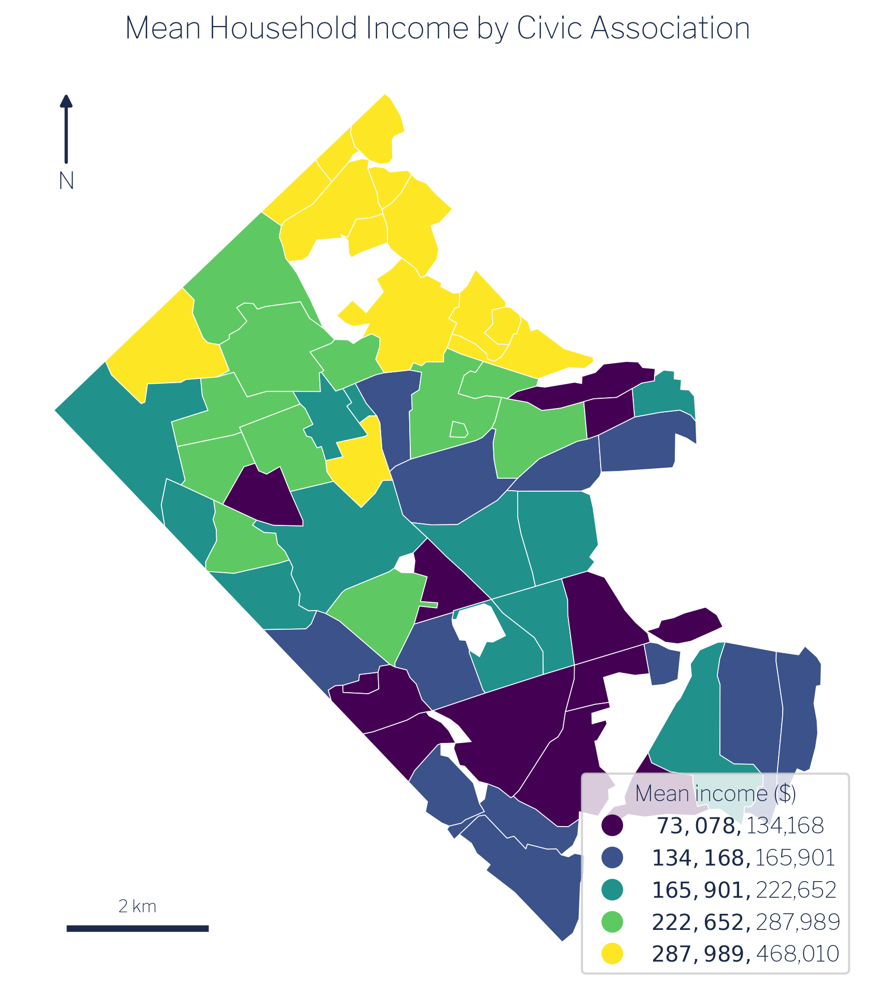
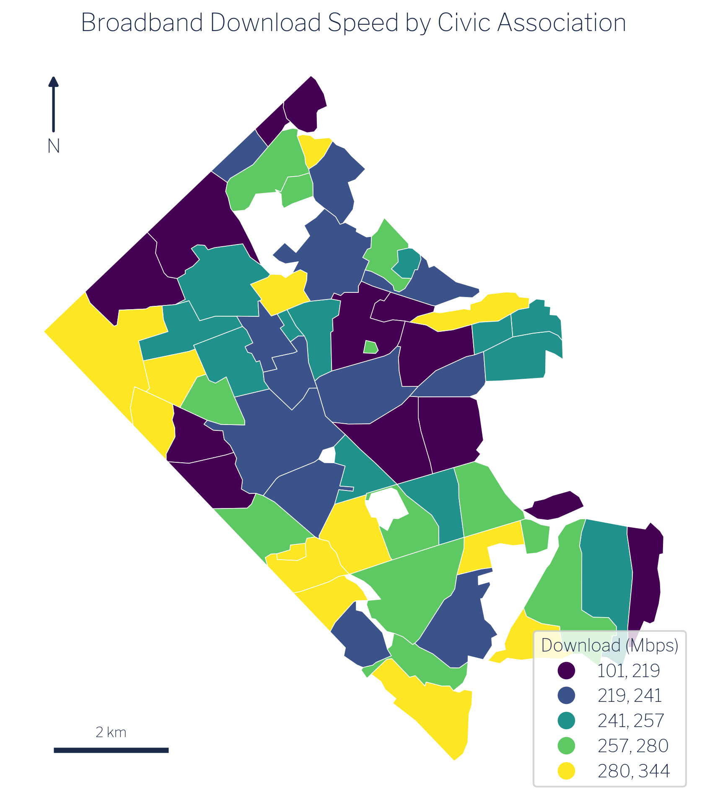
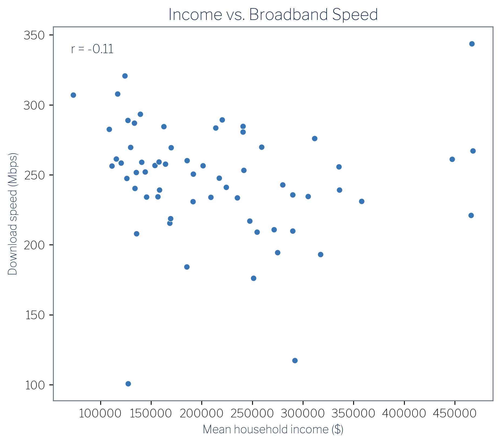
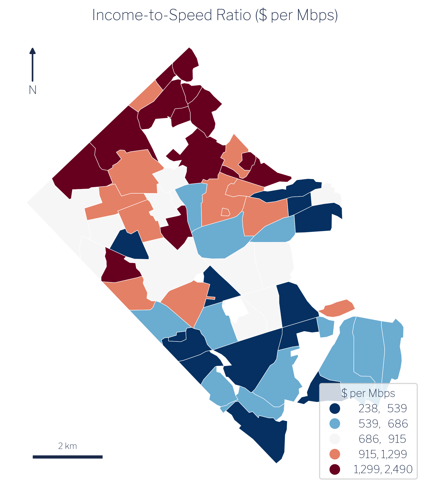
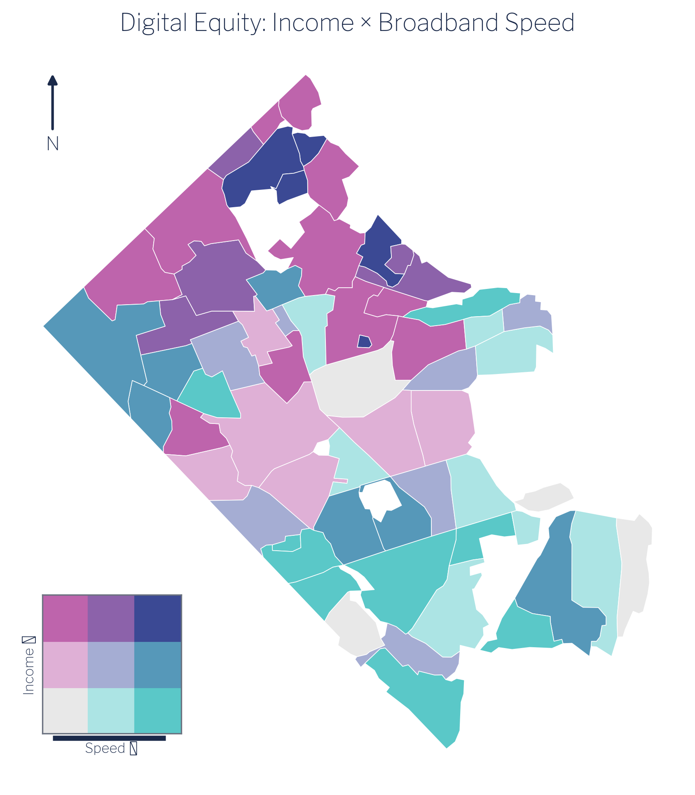

6 Results & Interpretation
The pipeline described in the preceding chapters produces two estimates for each of Arlington’s 62 civic associations: a mean household income derived from ACS block-group counts, and a mean download speed derived from Ookla speed-test tiles. This chapter presents both distributions, compares them, and draws out the central finding, which runs counter to the most common assumption analysts bring to digital-divide work.
6.1 Income distribution
Mean household income across the 62 associations spans from roughly $73,000 (Arlington Mill) to $468,000 (Gulf Branch), with a mean of association means near $215,600 and a median near $191,500. The roughly 109,500 households represented in the data are not evenly spread. Arlington’s geography concentrates its highest incomes in low-density, single-family neighbourhoods in the northern and western portions of the county: Gulf Branch, Rivercrest, Bellevue Forest, and Old Glebe all exceed $447,000. Denser, more mixed-use corridors in the south and east (Columbia Heights, Arlington Mill, Forest Glen) cluster toward the lower end.

The spatial pattern in Figure 6.1 reflects Arlington’s well-documented socio-spatial structure: income rises sharply as one moves away from the Rosslyn–Ballston and Route 1 corridors into the low-density residential tracts that border Fairfax and Falls Church [1]. The spread is wide for a jurisdiction that ranks among the wealthiest counties in the United States, which makes the county an instructive case: if income structured broadband access anywhere, it should be detectable here.
6.2 Broadband speed distribution
Mean download speed across the same 62 associations ranges from 100.8 Mbps (Foxcroft Heights) to 320.8 Mbps (Columbia Forest), with a county-wide mean of approximately 246.8 Mbps and a median of 251.9 Mbps. Mean upload speed averages roughly 105 Mbps. Even at the low end, every association exceeds the FCC’s legacy 25/3 Mbps benchmark; the real differentiation occurs at the higher tiers that support heavy simultaneous use.

The spatial pattern in Figure 6.2 is striking and largely inverts the income map. The fastest associations are concentrated in the denser southern and central corridors. Columbia Forest reaches 320.8 Mbps; Long Branch Creek 307.9 Mbps; Arlington Mill, the lowest-income association in the dataset at approximately $73,000, records the third-fastest speed at 307.0 Mbps. Fairlington follows at 293.4 Mbps. Conversely, the slowest associations (Foxcroft Heights at 100.8 Mbps, Arlingwood at 117.3 Mbps, Dominion Hills at 176.2 Mbps) are not low-income enclaves; they are mid-to-high-income, low-density, single-family neighbourhoods in the county’s outer northern tier.
6.3 The central finding: income and speed are decoupled
The Pearson correlation between mean household income and mean download speed across the 62 civic associations is r = −0.11. This value is substantively indistinguishable from zero. Income and broadband speed are essentially decoupled in Arlington.

The scatter plot in Figure 6.3 makes the absence of a relationship visually plain. There is no line, positive or negative, that summarises the cloud in any useful way. Analysts who arrive at this data expecting the standard “rich neighbourhoods get faster internet” finding will not find it here. The naive expectation, plausible on its face and documented in national-scale studies of access gaps [2], does not hold inside a uniformly affluent jurisdiction where income variation is high but where the key driver of infrastructure investment operates on a different dimension entirely.
That dimension is housing density. Dense multifamily corridors generate the subscriber concentration that makes competitive fibre and cable deployment commercially attractive to internet service providers. Arlington’s Rosslyn–Ballston spine and the Route 1 corridor have both density and the infrastructure investment that follows from it. Low-density single-family enclaves in northern Arlington have neither the building stock to attract the same level of competitive investment nor the resulting speeds, regardless of how wealthy their residents are.
6.4 Income-to-speed ratio
To quantify the mismatch between income and infrastructure, consider the income-to-speed ratio: dollars of mean household income per Mbps of mean download speed. Across the 62 associations this ratio ranges from $238 per Mbps (Arlington Mill, high speed, lower income) to $2,490 per Mbps (Arlingwood, low speed, higher income), more than a ten-fold span.

The map in Figure 6.4 is effectively a map of which associations are getting the least broadband for their economic standing. The highest-ratio associations (Arlingwood at $2,490, Bellevue Forest at $2,107, Gulf Branch at $1,752, Old Glebe at $1,713) are all wealthy, low-density, northern-tier communities. They are not suffering a crisis of unaffordability; they are simply not served by the same density of competitive infrastructure as their southern counterparts. The lowest-ratio association, Arlington Mill, has the strongest infrastructure relative to its income level precisely because dense multifamily housing attracted competitive carriers.
6.5 Bivariate synthesis
Classifying each association by income tercile (low/mid/high) and speed tercile (low/mid/high) produces a three-by-three contingency table that summarises the joint distribution. The cell counts are:
| Low speed | Mid speed | High speed | |
|---|---|---|---|
| Low income | 4 | 8 | 9 |
| Mid income | 6 | 7 | 7 |
| High income | 11 | 5 | 5 |

The largest single cell is high-income / low-speed, with 11 associations: Williamsburg, Maywood, Dominion Hills, Arlingwood, Bellevue Forest, Donaldson Run, and their neighbours. This cell alone falsifies the “rich areas get fast internet” hypothesis. At the opposite corner, 9 associations fall in the low-income / high-speed cell: Columbia Heights, Forest Glen, Columbia Forest, Westover Village, Long Branch Creek, and Arlington Mill, the dense multifamily corridors already identified as speed leaders.
The bivariate map in Figure 6.5 makes the geography legible. The high-income/low-speed cluster occupies the low-density northern and western portions of the county. The low-income/high-speed cluster wraps around the denser central and southern corridors. The pattern is structurally coherent and consistent across all three ways of visualising it: the scatter plot, the ratio map, and the bivariate class map.
6.6 Policy implications
The finding that the digital-divide axis in Arlington is housing density and infrastructure build-out, not household income, has direct implications for how jurisdictions should design broadband equity interventions [3], [4].
Income-based subsidy targeting, the most common policy tool, would direct resources toward low-income households while leaving the actual speed gaps unaddressed. The households that experience the weakest broadband performance in Arlington are, on average, high-income households in low-density neighbourhoods. An income-tested programme would systematically miss them.
More effective interventions would target the mechanism driving the gap: the commercial calculus that makes dense corridors attractive to competitive carriers but leaves single-family enclaves with fewer options. This suggests policy levers such as right-of-way facilitation for fibre providers in low-density zones, municipal broadband franchising conditioned on area coverage, and infrastructure requirements built into residential subdivision permitting. None of these is calibrated to household income; all are calibrated to the density-and-competition gap that the data actually reveal.
The Arlington case cannot be assumed to generalise directly to jurisdictions with lower overall incomes or with genuine gaps in physical access infrastructure. But the methodological lesson applies everywhere: verify the relationship between income and speed empirically before designing income-based interventions.